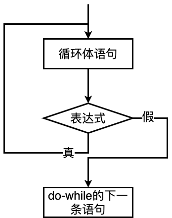

程序设计基础 · 第4次课 · 第3课时
从脉搏数据质控到素数判断与猜数游戏，理解循环流程的中途改变
由条件控制是否继续。
至少执行一次，再判断是否继续。
循环中途遇到特殊情况，能否提前离开或跳过本轮？
break 终止当前循环continue 跳过本轮剩余语句break 优化素数判断continue 在 for 与 while 中的差异
0、999：不参与统计，但后续数据仍要继续处理。
STOP：本次采集结束，后续数据不再读取。
continue 与 break 的区别continue跳过本轮循环体中后面的语句，进入下一次循环判断。
本条不要，后面还要。
break立即终止当前循环，执行循环之后的语句。
后面都不要了。
while (1) {
scanf("%d", &pulse);
if (pulse == -1)
break;
if (pulse == 0 || pulse == 999)
continue;
sum += pulse;
count++;
}
💡 课堂互动：向 AI 提问 for 循环与 while 循环中 continue 跳过表达式的区别。
break 与 continue 路径比较
break 的经典例题。
输入一个正整数 \(m\)，判断它是否为素数。
（注：素数指的是只能被 1 和自身整除的正整数，1 不是素数，2 是素数）
| 情况 | 判断 | 循环动作 |
|---|---|---|
找到一个 i 使 m % i == 0 |
m 不是素数 |
立即 break |
所有候选 i 都试完 |
m 是素数 |
自然结束 |
2 ~ m-1
容易理解，但检查次数多。
2 ~ m/2
大于 m/2 的整数不可能整除 m。
2 ~ sqrt(m)
若有因子，一定有一个不超过平方根。
flag = 1;
limit = sqrt(m);
for (i = 2; i <= limit; i++) {
if (m % i == 0) {
flag = 0;
break;
}
}
if (flag == 1)
printf("yes\n");
else
printf("no\n");
💡 课堂互动：通过 AI 的计算数据，直观感受提前退出对程序执行效率的巨大提升。
m = 9 和 m = 11 为例| m | 检查过程 | 何时结束 | 结果 |
|---|---|---|---|
| 9 | 9 % 2 != 0，9 % 3 == 0 |
找到因子3，break |
不是素数 |
| 11 | 11 % 2 != 0，11 % 3 != 0 |
候选因子试完 | 是素数 |
for (i = 2; i <= limit; i++) {
if (m % i == 0)
printf("no\n");
else
printf("yes\n");
}i 不是因子i 都不是因子continue：跳过本轮剩余语句while (条件) {
语句1;
if (特殊情况)
continue;
语句2;
}continue 时continue 在 for 与 while 中的差异for (i = 100; i <= 200; i++) {
if (i % 3 != 0)
continue;
printf("%d ", i);
}执行 continue 后仍会执行 i++。
i = 100;
while (i <= 200) {
if (i % 3 != 0)
continue;
printf("%d ", i);
i++;
}
如果 continue 前没有更新 i，可能死循环。
while 中的 continue？i = 100;
while (i <= 200) {
if (i % 3 != 0) {
i++;
continue;
}
printf("%d ", i);
i++;
}continue 前，要确认循环变量仍然能够更新。改写猜数游戏：输入你所猜的整数（规定为 1~100），与计算机产生的被猜数比较，若相等，显示猜中；若不等，显示与被猜数的大小关系，最多允许猜 7 次。
| 结束原因 | 程序表现 | 对应结构 |
|---|---|---|
| 猜中 | 立即停止 | break |
| 猜满7次 | 自然结束 | while (count < 7) |
| 结束后要区分原因 | 输出不同提示 | flag |
count = 0;
flag = 0;
mynumber = 38;
while (count < 7) {
scanf("%d", &yournumber);
count++;
if (yournumber == mynumber) {
printf("Lucky you!\n");
flag = 1;
break;
} else if (yournumber > mynumber) {
printf("Too big!\n");
} else {
printf("Too small!\n");
}
}
if (flag == 0)
printf("Game Over!\n");💡 课堂互动：尝试用 AI 建议的 isFound 标记或 count <= 7 判定区分两种结局。
本演示工具用于直观动态演练 C 语言中 break 与
continue 改变循环控制流的执行过程：
72、0、75、999、70、STOP、68，点击“下一步”高亮当前数据。
continue
跳过、break 退出），并高亮右侧对应 C 语言代码行。
sum、count
与循环状态说明。
循环条件变假。
break当前循环立即结束。
continue本轮后续语句跳过，进入下一轮。
continue 或
break。
当问题中存在“两层重复关系”，就需要多重循环。